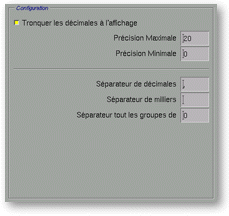

<!-- Documentation XQuad (c)1995-2000 AXENE contact axene@axene.org>
<html>

<head>
<title>Mise en forme des nombres: Affichage.</title>
</head>

<body BGCOLOR="#FFFFFF" BACKGROUND="Images/back.gif" TEXT="#000000">

<p ALIGN="right">  </p>

<p align="center"><br>
</p>

<h2 align="center">Configuration de l'affichage</h2>

<p>Lorsque l'on sélectionne le bouton <i>&quot;Affichage&quot;</i> de la barre
horizontale (en haut de la partie droite de la boîte de dialogue 'Mise en forme de
nombres'), suivant le type de format sélectionné, la section <i>&quot;Configuration&quot;</i>
peut prendre une des trois formes suivantes&nbsp;: <br>
<br>
</p>

<hr>

<p><br>
</p>
<a NAME="bnf_display_1">

<h3>Format&nbsp;: Nombres, Unités, Pourcentage</h3>
</a>

<p>Si le type de format de nombres est <i>&quot;Nombres&quot;</i>, <i>&quot;Unités&quot;</i>
ou <i>&quot;Pourcentages&quot;</i>, la section <i>&quot;Configuration&quot;</i> est&nbsp;:
</p>

<p align="center"> <br>
<small><i>Photo d'écran de la section &quot;Configuration&quot;. </i></small></p>

<p>Cette section est composée de haut en bas par&nbsp;: 

<ul>
  <li><a NAME="button_truncate">le bouton <i>&quot;Tronquer les décimales à
    l'affichage&quot;</i> permet de <b>faire apparaître autant de décimales du nombre que la
    largeur de la colonne</b> dans laquelle ce nombre se trouve <b>le permet</b>. Ainsi, plus
    la colonne est large, plus le nombre peut apparaître avec un grand nombre de décimales.
    Si ce bouton n'est pas sélectionné et si un nombre contient plus de décimales que la
    largeur de la cellule ne permet d'afficher, alors le nombre apparaît sous forme d'une
    suite de signe #. Dans le cas où le type de format de nombres est <i>&quot;Unité&quot;</i>
    ou <i>&quot;Pourcentage&quot;</i>, ce bouton est grisé et les décimales ne peuvent pas
    être tronquées à l'affichage. </a><br>
    &nbsp;</li>
  <li><a NAME="textfield_max_prec">le champ texte <i>&quot;Précision Maximale&quot;</i>
    permet de <b>préciser le nombre maximum de décimales</b> qui pourront être affichées.
    La valeur doit être comprise entre la valeur du champ texte <i>&quot;Précision
    Minimale&quot;</i> et 20. </a><br>
    &nbsp;</li>
  <li><a NAME="textfield_min_prec">le champ texte <i>&quot;Précision Minimale&quot;</i>
    permet de <b>préciser le nombre minimum de décimales</b> à afficher. La valeur doit
    être comprise entre 0 et la valeur du champ texte <i>&quot;Précision Maximale&quot;</i>.
    Lorsque la largeur de la cellule ne permet pas d'afficher au minimum le nombre de
    décimale indiqué ici, le nombre sera affiché par une suite de signe #. Si le nombre à
    afficher comporte moins de décimales que la valeur de ce champ texte, des 0 sont
    ajoutés. </a><br>
    &nbsp;</li>
  <li><a NAME="textfield_sep_string">le champ texte <i>&quot;Séparateur de décimales&quot;</i>
    permet de <b>choisir le signe qui indique la séparation entre la partie entière et la
    partie décimale</b> d'un nombre. Habituellement, le séparateur est une virgule `,' en
    français et un point `.' en anglais. On ne peut mettre qu'un seul caractère dans ce
    champ. </a><br>
    &nbsp;</li>
  <li><a NAME="textfield_sep_mstring">le champ texte <i>&quot;Séparateur de milliers&quot;</i>
    permet de <b>choisir le signe qui sépare les chiffres d'un grand nombre</b> afin de
    faciliter sa lecture. Habituellement, on sépare les chiffres par groupe de 3 chiffres,
    avec un espace en français et une virgule en anglais. On ne peut mettre qu'un seul
    caractère dans ce champ. </a><br>
    &nbsp;</li>
  <li><a NAME="textfield_sep_position">le champ texte <i>&quot;Séparateur tous les groupes
    de&quot; </i>permet d'indiquer le nombre de chiffre de chaque groupe entre lesquels le
    séparateur de milliers sera positionné. Les deux valeurs les plus usitées sont 3 et 0.
    Mettre 0 dans ce champ permet de ne pas appliquer de séparateur de milliers. Cette valeur
    doit être comprise entre 0 et 20. </a></li>
</ul>

<p><br>
<br>
</p>

<hr>

<p><br>
</p>
<a NAME="bnf_display_2">

<h3>Format&nbsp;: Scientifique</h3>
</a>

<p>Si le type de format de nombres est <i>&quot;Scientifique&quot;</i>, la section <i>&quot;Configuration&quot;</i>
est&nbsp;: </p>

<p align="center"> <br>
<small><i>Photo d'écran de la section &quot;Configuration&quot;. </i></small></p>

<p>Cette section est composée de haut en bas par&nbsp;: 

<ul>
  <li><a NAME="textfield_max_prec2">le champ texte <i>&quot;Précision Maximale&quot;</i>
    permet de <b>préciser le nombre maximum de décimales</b> qui pourront être affichées.
    La valeur doit être comprise entre la valeur du champ texte <i>&quot;Précision
    Minimale&quot;</i> et 20. </a><br>
    &nbsp;</li>
  <li><a NAME="textfield_min_prec2">le champ texte <i>&quot;Précision Minimale&quot;</i>
    permet de <b>préciser le nombre minimum de décimales</b> à afficher. La valeur doit
    être comprise entre 0 et la valeur du champ texte <i>&quot;Précision Maximale&quot;</i>.
    Lorsque la largeur de la cellule ne permet pas d'afficher au minimum le nombre de
    décimale indiqué ici, le nombre sera affiché par une suite de signe #. Si le nombre à
    afficher comporte moins de décimales que la valeur de ce champ texte, des 0 sont
    ajoutés. </a><br>
    &nbsp;</li>
  <li><a NAME="textfield_sep_string2">le champ texte <i>&quot;Séparateur de décimales&quot;</i>
    permet de <b>choisir le signe qui indique la séparation entre la partie entière et la
    partie décimale</b> d'un nombre. Habituellement, le séparateur est une virgule `,' en
    français et un point `.' en anglais. On ne peut mettre qu'un seul caractère dans ce
    champ. </a><br>
    &nbsp;</li>
  <li><a NAME="textfield_sep_estring">le champ texte <i>&quot;Représentation de
    l'exposant&quot;</i> permet de <b>choisir le signe qui sépare la mantisse de l'exposant</b>.
    Ce champ texte prend habituellement la valeur `E' ou `e'. On peut mettre plusieurs
    caractères dans ce champ. </a><br>
    &nbsp;</li>
  <li><a NAME="textfield_exp_prec">le champ texte <i>&quot;Taille minimale de l'exposant&quot;</i>
    permet de <b>préciser le nombre minimum de chiffres de l'exposant</b>. Si l'exposant a
    moins de chiffres que cette valeur, l'exposant est étendu avec des 0. La valeur doit
    être comprise entre 0 et 10. La valeur 0 a un usage particulier&nbsp;: elle permet de ne
    pas afficher d'exposant nul. </a><br>
    &nbsp;</li>
  <li><a NAME="textfield_exp_multiple">le champ texte <i>&quot;Exposant multiple de&quot;</i>
    permet de <b>préciser un facteur commun à l'exposant d'un nombre</b>. L'exposant
    affiché sera le multiple le plus proche de l'exposant réel tel que la partie entière de
    la mantisse ne soit pas nulle. Pour ne pas utiliser cette option, il suffit de mettre la
    valeur 1. La valeur doit être comprise entre 1 et 20. </a><br>
    &nbsp;</li>
  <li><a NAME="button_exp_sign">le bouton <i>&quot;Toujours afficher le signe de
    l'exposant&quot;</i> permet de <b>choisir si les exposants positifs seront précédés du
    signe + ou non</b>. Si le bouton est enfoncé, alors tout exposant sera précédé de son
    signe (+ ou -). </a></li>
</ul>

<p><br>
<br>
</p>

<hr>

<p><br>
</p>
<a NAME="bnf_display_3">

<h3>Format&nbsp;: Fractions</h3>
</a>

<p>Si le type de format de nombres est <i>&quot;Fractions&quot;</i>, la section <i>&quot;Configuration&quot;</i>
est&nbsp;: </p>

<p align="center"> <br>
<small><i>Photo d'écran de la section &quot;Configuration&quot;. </i></small></p>

<p>Cette section est composée de haut en bas par&nbsp;: 

<ul>
  <li><a NAME="button_frac_decimal">le bouton <i>&quot;Fraction sur la partie décimale&quot;</i>
    permet de <b>choisir si seule la partie décimale est affichée sous forme de fraction ou
    le nombre entier</b>. Par exemple, le nombre 3,416 sera affiché <tt>'3 5/12'</tt> si ce
    bouton est enfoncé et <tt>'41/12'</tt> sinon. </a><br>
    &nbsp;</li>
  <li><a NAME="textfield_frac_prec">le champ texte <i>&quot;Précision du dénominateur&quot;</i>
    permet de <b>préciser le nombre maximum de chiffres du dénominateur de la fraction</b>.
    La valeur doit être comprise entre 1 et 20. Par exemple, pour le nombre PI
    (=3,14159265358...), si la valeur de ce champ est 2, alors l'affichage donne <tt>'22/7'</tt>
    et si la valeur de ce champ est 3, alors l'affichage donnera <tt>'355/113'</tt>. </a></li>
</ul>

<p><br>
</p>

<hr>

<p ALIGN="right"></p>
</body>
</html>
